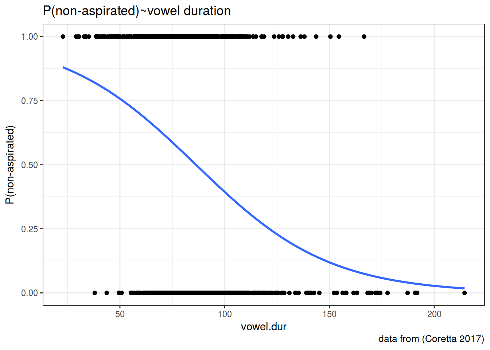

v.elision <- read.csv("http://goo.gl/aE3yVg")
v.elision %>%
count(word, group, position, v.elision) %>%
ggplot(aes(x = group, y = n, fill = v.elision))+
geom_bar(stat="identity", position=position_dodge())+
facet_wrap(~word) +
labs(y = "number",
x = "word group",
title = "number of v elision by lexeme and word group")v.elision <- read.csv("http://goo.gl/aE3yVg")
v.elision %>%
count(word, group, position, v.elision) %>%
ggplot(aes(x = position, y = n, fill = v.elision))+
geom_bar(stat="identity", position=position_dodge())+
facet_wrap(~word) +
labs(y = "number",
x = "word group",
title = "number of v elision by lexeme and phrase position")fit <- glm(v.elision~group+position, data = v.elision, family = "binomial")
summary(fit)##
## Call:
## glm(formula = v.elision ~ group + position, family = "binomial",
## data = v.elision)
##
## Deviance Residuals:
## Min 1Q Median 3Q Max
## -2.8874 0.1111 0.1766 0.7231 1.1209
##
## Coefficients:
## Estimate Std. Error z value Pr(>|z|)
## (Intercept) 4.1529 0.7139 5.817 5.98e-09 ***
## groupsecond -2.9450 0.7390 -3.985 6.74e-05 ***
## groupthird -4.0185 0.7252 -5.542 3.00e-08 ***
## positionweak 0.9315 0.2419 3.851 0.000117 ***
## ---
## Signif. codes: 0 '***' 0.001 '**' 0.01 '*' 0.05 '.' 0.1 ' ' 1
##
## (Dispersion parameter for binomial family taken to be 1)
##
## Null deviance: 612.47 on 590 degrees of freedom
## Residual deviance: 491.16 on 587 degrees of freedom
## AIC: 499.16
##
## Number of Fisher Scoring iterations: 7fit$coefficients## (Intercept) groupsecond groupthird positionweak
## 4.1528886 -2.9450463 -4.0185130 0.9315409v.elision %>%
count(word, position, group, v.elision) %>%
select(-n, -v.elision) %>%
unique() ->
new.df
new.df %>%
predict(fit, newdata = ., type = "response") ->
new.df$prediction
new.df %>%
arrange(prediction)## Source: local data frame [32 x 4]
## Groups: word, position, group [32]
##
## word position group prediction
## <fctr> <fctr> <fctr> <dbl>
## 1 бесчин strong third 0.5335434
## 2 злор strong third 0.5335434
## 3 попеч strong third 0.5335434
## 4 чувс strong third 0.5335434
## 5 шефс strong third 0.5335434
## 6 бесчин weak third 0.7438196
## 7 злор weak third 0.7438196
## 8 попеч weak third 0.7438196
## 9 чувс weak third 0.7438196
## 10 шефс weak third 0.7438196
## # ... with 22 more rowsnew.df %>%
arrange(desc(prediction))## Source: local data frame [32 x 4]
## Groups: word, position, group [32]
##
## word position group prediction
## <fctr> <fctr> <fctr> <dbl>
## 1 бесчин weak first 0.9938457
## 2 злор weak first 0.9938457
## 3 попеч weak first 0.9938457
## 4 чувс weak first 0.9938457
## 5 шест weak first 0.9938457
## 6 шефс weak first 0.9938457
## 7 бесчин strong first 0.9845243
## 8 злор strong first 0.9845243
## 9 попеч strong first 0.9845243
## 10 чувс strong first 0.9845243
## # ... with 22 more rowsicelandic <- read.csv("https://goo.gl/7gIjvK")
fit <- glm(aspiration~vowel.dur, data = icelandic, family = "binomial")
summary(fit)##
## Call:
## glm(formula = aspiration ~ vowel.dur, family = "binomial", data = icelandic)
##
## Deviance Residuals:
## Min 1Q Median 3Q Max
## -1.8521 -1.1025 0.5573 1.0645 2.2801
##
## Coefficients:
## Estimate Std. Error z value Pr(>|z|)
## (Intercept) 2.709936 0.325231 8.332 <2e-16 ***
## vowel.dur -0.031413 0.003721 -8.442 <2e-16 ***
## ---
## Signif. codes: 0 '***' 0.001 '**' 0.01 '*' 0.05 '.' 0.1 ' ' 1
##
## (Dispersion parameter for binomial family taken to be 1)
##
## Null deviance: 1117.3 on 805 degrees of freedom
## Residual deviance: 1026.1 on 804 degrees of freedom
## AIC: 1030.1
##
## Number of Fisher Scoring iterations: 3fit$coefficients## (Intercept) vowel.dur
## 2.70993575 -0.03141285icelandic <- read.csv("https://goo.gl/7gIjvK")
icelandic %>%
mutate(`P(non-aspirated)` = as.numeric(aspiration) - 1) %>%
ggplot(aes(x = vowel.dur, y = `P(non-aspirated)`))+
geom_smooth(method = "glm", method.args = list(family = "binomial"), se = FALSE) +
geom_point()+
theme_bw()+
labs(title = "P(non-aspirated)~vowel duration",
caption = "data from (Coretta 2017)")
predict(fit, newdata = data.frame(vowel.dur = 175), type = "response")## 1
## 0.05801361